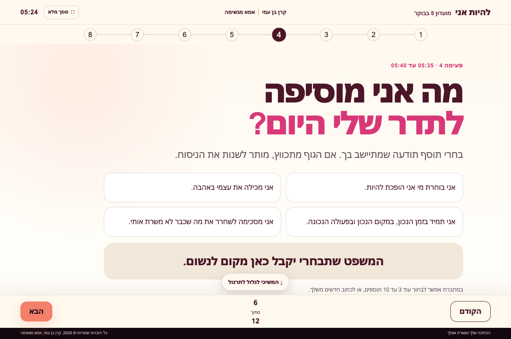

פותחות את הבוקר יחד
לייבים חמישה בקרים בשבוע, שני עד שישי, מ־5:00 עד 6:00. זמן לכתיבה, פוקוס ותכנון, עם הנחיה של קרן והצוות.
ברוכה הבאה למועדון ה־VIP של אמא מגשימה
הראש קיבל מקום במחברת. הדבר שחשוב לך קיבל מקום ביום.
מנוי חודשי למוטיבציה, בוסט אנרגטי ומפגשים שנותנים לך מקום בתוך השגרה.
אחת ההטבות הראשונות: לפתוח את היום יחד בלייב, חמישה בקרים בשבוע, מ־5:00 עד 6:00.
כן, בחמש. גם אני שמעתי את הפרצוף שעשית.
מה מחכה לך במנוי?
פותחות יחד את הבוקר מ־5 באוקטובר. זו ההטבה הראשונה שאיתה יוצאות לדרך. המועדון יתרחב גם למפגשי העשרה חודשיים ולמפגשי סגירת יום שבועיים בלייב.
לייבים חמישה בקרים בשבוע, שני עד שישי, מ־5:00 עד 6:00. זמן לכתיבה, פוקוס ותכנון, עם הנחיה של קרן והצוות.
מקום לחזור אליו כשאת רוצה להתניע, להתרענן ולהיזכר במה שחשוב לך.
זמן לצאת מהאוטומט, להרחיב את המבט ולפגוש כיווני מחשבה חדשים.
נפגשות בלייב כדי לעצור יחד, לתת מקום למה שהיה ולסגור את היום עם רגע לעצמך.
מקום לקשר בין המפגשים, לעדכוני המועדון ולתחושת הביחד.
יש לך כוונות טובות. וגם כפתור נודניק.
״עוד חמש דקות״. אחריהן כבר מתחילים ההודעות, החיפושים וה״איפה שמתי״. את עוד מנסה למצוא את עצמך, והיום כבר מצא לך תעסוקה.
בערב את נזכרת במה שרצית בשבילך. היה לך יום מלא. רק המקום שלך בתוכו שוב נשאר על בסיס מקום פנוי.
בואי לתת לעצמך את השעה הראשונה.
כשהיום יתחיל לבקש ממך דברים, כבר פגשת גם אותך.
אחת ההטבות הראשונות במנוי: מועדון 5 בבוקר
שני עד שישי, מחמש עד שש, אנחנו נפגשות לשעת כתיבה, פוקוס ותכנון יום. המפגשים בהנחיית קרן בן עמי וצוות המועדון. יש רצף, ויש נשים שקמות איתך. את לא צריכה לקום וגם להמציא מה לעשות עם עצמך. משימה אחת פחות, עוד לפני הקפה.
בודקות איך ישנו ואיך קמנו. ממשיכות ל־20 דקות של כתיבה חופשית וניקוז תודעתי, כדי לתת למחשבות מקום מחוץ לראש.
פוקוס יומי, תוספי תודעה והודיה. תרגילי דמיון והקשבה לגוף, שאנחנו קוראות להם הגנות ומקלחת פנימית.
בוחרות מה חשוב לך לקדם ומתי תתפני אליו. מסיימות עם תכנון ליום, כדי שגם הדבר שלך יקבל מקום.
למי זה מתאים?
וגם למי שכבר קמה מוקדם, אבל מעבירה את השעה הראשונה בגלילה לתוך החיים של אחרות. אפשר להשתמש בשעה הזאת גם לחיים שלך.
תנאי הקבלה: לבוא כמו שקמת.
מותר להגיע מבולבלת. מותר שעוד אין לך מילים. ומותר לפספס בוקר ולחזור למחרת, בלי להקים ועדת חקירה על האישיות שלך.
המעבר שאנחנו מתרגלות
להוציא למחברת, ולבחור דבר אחד להתמקד בו.
להיכנס לשעה שנקבעה מראש ולהתחיל עם ההנחיה.
להחליט בבוקר מה חשוב לך ומתי תתני לו זמן.
אלה פעולות שאנחנו מתרגלות יחד, בוקר אחרי בוקר. את בודקת מה עובד עבורך ובונה דרך לחזור אליו.
נעים להכיר, אני קרן בן עמי
״פריצות הדרך הכי גדולות שלי קורות בחלון הזה, כשאני משכימה לפני כולם.״
אני מכירה את החלון הזה שבו עוד שקט בחוץ ואפשר לשמוע מה קורה בפנים. משם באה ההזמנה שלי: להיפגש בבוקר, לכתוב, להקשיב ולבחור מה את רוצה לקחת אל היום.
אני והצוות מביאות את ההנחיה. את מביאה את החיים האמיתיים. כולל השיער של חמש בבוקר. הוא חלק מהקאסט.
קרן בן עמי · אמא מגשימה
למה לבחור במסגרת הזאת?
פוגשות את הבוקר יחד בזום, עם הנחיה שמלווה את העשייה בזמן המפגש.
שני עד שישי, באותה שעה. שמונה שלבים קבועים, שמפנים מקום לתוכן שמשתנה אצלך מדי יום.
הכתיבה וההקשבה מגיעות גם אל היומן: מה חשוב היום, ומה את בוחרת לעשות איתו.

מצטרפות למועדון ה־VIP · מתחילות ב־5 באוקטובר
מצטרפת למנוי במועדון ה־VIP של אמא מגשימה, ונותנת לעצמך מקום קבוע לאורך החודש. מתחילות במפגשי הבוקר ב־5 באוקטובר, וממריאות משם. בהמשך יצטרפו מפגשי ההעשרה וסגירת היום בלייב.
מנוי חופשי חודשי למועדון ה־VIP
125 ₪
תשלום חודשי בהוראת קבע
שלחי לקרן הודעה:
העתיקי ושלחי לקרן בשיחה שממנה הגעת לדף.
רגע לפני שאת אומרת: אני בפנים
למועדון ה־VIP של אמא מגשימה, במנוי של 125 שקלים לחודש בהוראת קבע. מתחילות במפגשי הבוקר, חמישה בקרים בשבוע מ־5:00 עד 6:00, עם קבוצת וואטסאפ למועדון, מוטיבציה ובוסט אנרגטי; בהמשך יצטרפו גם מפגשי העשרה חודשיים ומפגשי סגירת יום שבועיים בלייב. הבוקר הוא המקום שממנו ממריאות, ויש לנו עוד לאן.
שמעתי אותך, וגם את כפתור הנודניק שמוחא לך כפיים ברקע. את לא צריכה להגיע עם תעודת ״אשת בוקר״, רק עם סקרנות לבדוק איך מרגישה שעה שבה את פוגשת את עצמך לפני ההודעות והבקשות של כולם. כדי לתת לזה סיכוי, פַּני מקום גם לשעת שינה מתאימה; אם חמש בבוקר לא אפשרי לך כרגע, קחי בחשבון שזו ההטבה הראשונה שאיתה אנחנו מתחילות.
אז תפספסי בוקר, ובבוקר הבא תוכלי לחזור, בלי להפוך את השעון המעורר לוועדת חקירה על האופי שלך. בשביל זה יש שעה קבועה, הנחיה ונשים שמתחילות איתך: כדי שיהיה לך לאן להגיע גם כשהמוטיבציה עוד מתחת לפוך. את מביאה את הנכונות להופיע, ואת התרגול נעשה יחד.
במפגשי הבוקר את כבר עושה תוך כדי: מוציאה למחברת את מה שמסתובב בראש, בוחרת פוקוס ונותנת ביומן מקום לדבר שחשוב לך היום. קרן וצוות המועדון מנחות את התרגול, כך שלא צריך לחכות לסוף כדי ״ליישם מתישהו״; למתישהו, כידוע, יש יומן מאוד עמוס.
מחברת וכלי כתיבה יספיקו להתחלה, ואת כל השאר מותר להביא בדיוק כמו שהוא: ראש מלא, מעט מילים, פיג׳מה וחוסר חשק להסביר את עצמך בחמש בבוקר. תקבלי הנחיה לאורך התרגול, והכתיבה האישית נשארת במחברת שלך; אין צורך לחשוף אותה כדי לקחת חלק.
כן, את יכולה להגיע גם בלי להכיר אותי ובלי לדעת מי הנשים האחרות, כי ההיכרות יכולה להתחיל פשוט מבוקר אחד משותף. אני קרן בן עמי, והחלון הזה של השכמה לפני כולם הוא המקום שבו קורות לי פריצות הדרך הכי גדולות; אני והצוות מזמינות אותך לפנות גם לעצמך זמן לכתוב, להקשיב ולבחור מה את לוקחת אל היום שלך.
כי אנחנו מתחילות יחד ב־5 באוקטובר, וזו הזדמנות לשים ביומן זמן בשבילך לפני שהחודש שוב מתמלא בכל מה שצריך. אם את מזהה שהדברים שלך נדחים שוב ושוב לסוף, אפשר כבר עכשיו לבחור שעה קבועה ולהתכונן אליה; ״כשיירגע קצת״ מוזמנת להצטרף גם היא, אבל את לא חייבת לחכות לה.